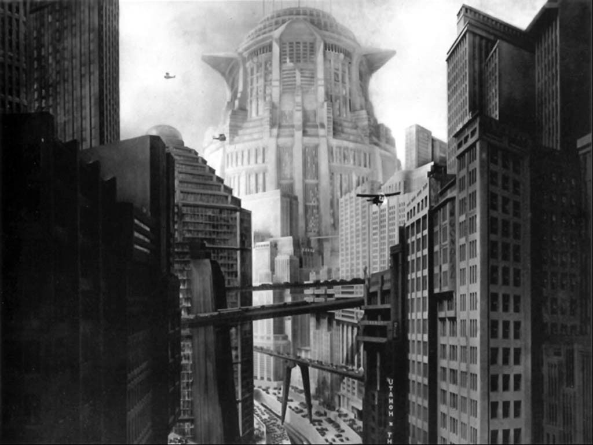

METROPOLIS
Ce film allemand de 1927, adapté de l'ouvrage de Thea von Harbou,
est signé du réalisateur autrichien Fritz Lang.
À l'instar de l'affiche principale, qui nous montre la ville dans son entier,
c'est la structure pyramidale, chère à l'Art Déco, qui est mise en avant à l'échelle également du quartier mais également de l'immeuble lui-même. D'autres plus petites pyramides sont utilisées pour la décoration...
